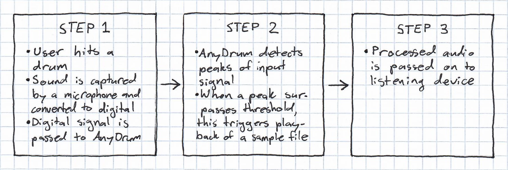
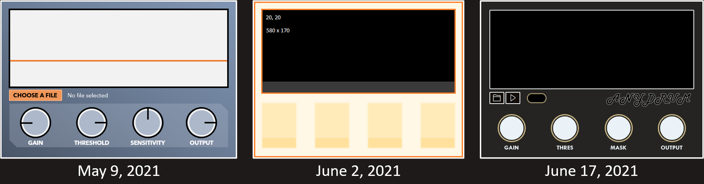
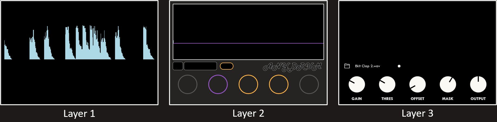

AnyDrum
Product Design / Development • Visit Website
The Problem
The majority of musicians I know live in cramped apartments and rely mostly on audio production software on their laptops to make their ideas a reality. This kind of recording setup works well for vocalists, guitarists, and keyboard players, but when it comes to recording drums (the loudest and most elaborate instrument!), most musicians are out of luck.
There is an alternative which allows musicians with minimal resources to produce professional sounding drum performances. It’s called drum triggering software, and quite a few variations of it exist on the market—but they all suffer from complicated, messy designs, tons of redundant functionality, and extremely high price tags.
The Solution
For this reason, I took it into my own hands to create AnyDrum. It gets to the essence of drum triggering, without any excessive complications. Below is a chart showing the basic functionality of the program:

{kind=link}
All of the coding and design work was done by me over the course of several months. Before I started working on this project, I had to use several online resources to learn the basics of C++, the main coding language used in the back-end.
Another aspect to this project that was very important to me was the UX design. I was sensitive to the design issues of the pricey alternatives, and I felt that artists deserve software that clearly values beauty and simplicity. Right from the start, I knew essentially how it should look.
{kind=link}
I made sure that every detail the user encounters in this program has a clearly thought out intention. The visual component, for example, is necessary because one of the main user inputs (the Threshold parameter) has to deal directly with the amplitude of the input signal. The “Select Sample” button, as well as the name of the selected file beside it, are there so that the user can control the core function of the program. Each of the 4 knobs (later increased to 5) represents an essential variable in the function that modifies input audio.
As a result of this minimalist design process, the number of parameters on the program is as low as possible—this makes AnyDrum uniquely simple and straightforward to use.
Below are a couple of videos of the final product in action:
The Design and Coding Process
To create digital wireframes, I mostly relied on Microsoft PowerPoint. I realize that this choice of software is rather unconventional, but the option to create several slides for different brainstorm sessions, as well as the easily accessible shapes and drawing tools, proved to be quite useful for UX design.
Below are a couple of early design ideas, which helped to narrow down the best choices for colour palette and layout dimensions:

{kind=link}
Once I figured out a relatively satisfying design to start with, I turned my attention to coding for a couple of weeks. The main tasks involved in this process were i) figuring out how to play a selected audio file depending on input amplitude (this is more on the back-end), and ii) figuring out how to make an interactive visual component that gives users a better idea of what the program is doing (this is more on the front-end).
The hardest part was creating the visual component, as there were very few free online resources I could find to help me out. When I finally figured it out, I was inspired to make my own online tutorial (click here to check it out!). It gets around 50 views each month, and I’m overjoyed to see it helping other programmers out!
The above video showcases the working visual component, file selection buttons, toggle switch, and input volume, threshold, and output volume knobs, respectively.
With the majority of the coding work figured out, it was time to shift focus back to the UX design. Just like with the parameters I chose to include in the program, I wanted every decision regarding the color scheme to have a very clear intention. Below is the final design of the program:
{kind=link}
This color scheme can be separated into 3 layers, which serve as the background layer, the middle layer, and the foreground.

{kind=link}
Most of the styling happens in the middle layer, where the colours were chosen carefully to create thematic connections. The outline around the threshold knob, for example, is the same colour as the threshold line on the waveform. This provides users with an intuitive idea that the knob and line are connected—and in fact they are, on the back-end.
It’s also the case that the only coloured elements on the user interface are the ones that are active when triggering is turned on, and disabled when it is turned off. The rest of the interactive elements of the program are coloured in one of two shades of grey, and they are active regardless of whether or not triggering is enabled.
The point of this colour scheme is to make it easy for users to learn to use the program without the need for elaborate instruction manuals or tutorials.
The Website
After completing a release version of the app, it was time to turn my attention toward making a website for the project, with the final aim of marketing and selling it to musicians around the world.
I began the website design with React.js and CSS, creating a standard set of header and footer elements which would be replicated across each page of the website. The reason I chose React is because I heard good things about how it keeps all the aspects of the web design process clear and organized. This did prove to be true as the website got more complex and I kept adding new pages, including the homepage, a user manual, an about page, and a downloads section.
It was also necessary to create various forms of artwork to make the website more vibrant, such as a logo, a landing page design, and several videos showcasing the app’s functionality.
I then used Shopify to create a website according to my React design, and implemented digital downloading in order to enable customers to download the software after paying. I also compiled a demo version of the app with limited functionality and added it to the site as a free download. In total, the website creation aspect of this project took around 3 weeks.
The Marketing
Once the website design was finished, I began experimenting with Google and Facebook ads, trying to figure out which could deliver the most effective results. I ended up settling on Facebook ads, as they enable sellers to fine-tune their desired demographics more accurately and for a lower price.
I then ran ad campaigns across a variety of Meta-owned platforms, including Facebook, Instagram, and WhatsApp. After a few days of fine tuning, I was able to start getting around 100 website visits per day, with a sales conversion rate of around 0.5%. It was a thrill to make some sales and help real musicians out with their recordings!
I also experimented with reaching out to drummers and musicians with large online presences, offering them a free copy of the app if they would share it on their social media. This did not yield many results, as it is likely that the content creators with large followings were simply too busy to reply to my requests. Regardless, it was a valuable part of my learning process.
Additionally, I put effort into posting my own photos and videos of the product in action on various social media sites such as Reddit, YouTube and Instagram. This ended up generating the interest of a couple of larger companies in the United States that wanted to purchase my design and source code. It was really exciting to find out that, with some marketing effort, I could get the attention of the more established organizations in the audio industry!
The Big Takeaway
When I decided to work on this project, I had never used C++ or made an audio application before, and I thought my chances of success were very slim. There were many moments throughout the process where I ran into hurdles that felt insurmountable.
However, time and time again, I found that as long as I kept putting in enough effort, I would inevitably get the results I was looking for. I just had to keep trying!
So, my key takeaway from working on AnyDrum is that, if you get a big idea, it is absolutely possible to achieve it, no matter how big—as long as you take it step by step each day.